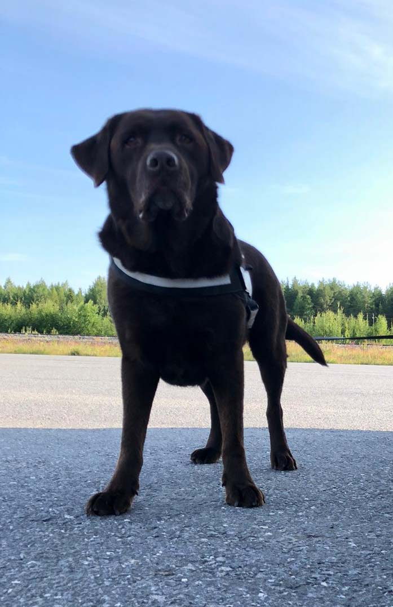

Kenttäopas uteliaalle
Lähde sinne missä tie hiljentää.
Pohjoiseen on hidas matkablogi villien rannikkojen, anteliaiden pöytien ja paikasta jäävien pienten yksityiskohtien parista.
Lue uusinViikonloppukutsu
Muistiinpanot kartan reunalta.
Joka toinen perjantai lähetämme yhden ajatuksia herättävän tarinan, yhden kauniin paikan ja syyn valita pidempi reitti kotiin.
Liity lähetykseen
Aloita tutkiminen
Kolme tapaa sisään.
Omat koirat
Tapaa Teppo, Sancho ja Nala.
Jokainen hyvä reitti tarvitsee luotettavan kumppanin. Nämä kolme pitävät päivämme ulkona, kävelynsä pidempinä ja tarinansa lämpimämpinä.

Pieni suuntaviivasto
Valitse seuraavan päiväsi tyyppi.
Käytä tätä pikaopasta kun tiedät tarvitsevasi poistua, mutta et ole aivan varma minne alkaa.
| Matkan tunnelma | Mene tänne | Paras | Aloita täältä |
|---|---|---|---|
| Avoin | Ranta | Tuoretta ilmaa ja pitkiä kävelyitä | Etsi ranta → |
| Syvä vihreä | Luonto | Hiljaiset polut ja palautumispäivät | Seuraa puita → |
| Täynnä elämää | Kaupunki | Hyvää ruokaa ja uusia katuja | Lue lähetteet → |